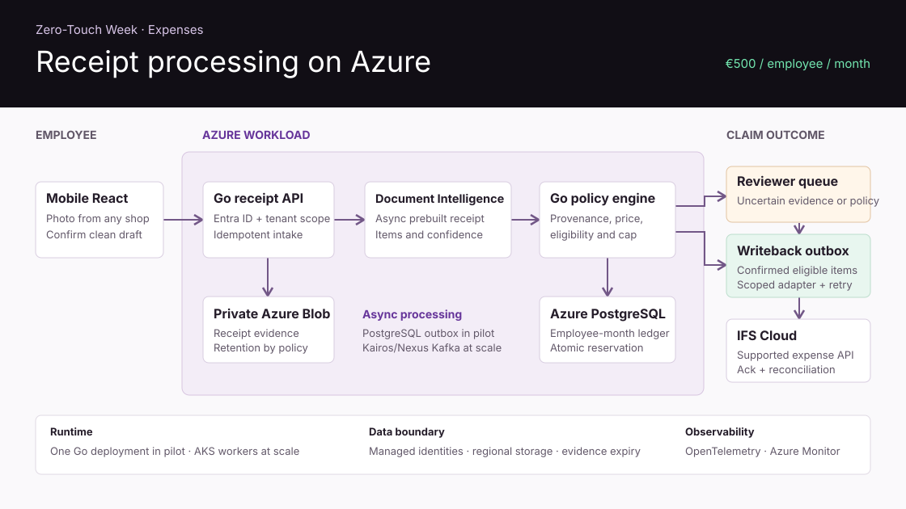

Time tolerance
For each worker-day, compare pre-edit draft and approved reportable minutes. An absolute difference of 30 minutes or less meets the pilot target.
Independent architecture proposal · 2026
Timesheets and expenses from existing evidence.
Two workflows for IFS Cloud field teams. Use work signals to draft time and receipt photos to draft expenses. Ask people to confirm drafts and resolve exceptions.
Customer outcomes
Use work signals and receipt photos to prepare drafts. Measure staff time, exception load and the delay from approval to posting against the customer’s current workflow.
For each worker-day, compare pre-edit draft and approved reportable minutes. An absolute difference of 30 minutes or less meets the pilot target.
Travel, work, waiting and break are illustrative. Each tenant maps permitted activity and pay codes under a versioned policy.
| Role | Customer benefit | Measure against baseline |
|---|---|---|
| Worker | Confirm a prepared shift or itemized receipt. | Active entry minutes, including corrections. |
| Approver | Start with gaps, outliers and unclear evidence. | Review time and share needing follow-up. |
| Finance | Track approved labor and committed expense to posting. | Allocation accuracy and acknowledgment delay. |
An assigned six-hour order and seven hours of site presence support a possible allocation. Work completion comes from a validated status event, operational record or human confirmation. Camera observations represent crossings of people in a zone. Named identity requires a separately authorized check-in or badge source.
Product principle. Automate data capture, not accountability. Missing evidence stays visible. A policy engine flags possible breaks or overtime and leaves any correction to an authorized person.
Start with one team and redacted examples. Agree on the current policy, baseline and sandbox destination before implementation. See the timesheet requirements and expense requirements for acceptance checks.
Reference architecture
Kairos/Nexus owns draft revisions and processing state. IFS Cloud F1 owns the authoritative approved time and expense transactions.
Single Go deployment and a PostgreSQL outbox, a React review UI, authorized check-ins and a supported IFS test feed. Run in shadow mode. Optional vision sits on a separate edge box after approval.
Partition Kafka streams and scale Go consumers independently on Azure. Use AKS when operating needs justify it. Run Python inference in isolated workloads with separate capacity and model release controls.
Use OpenTelemetry across ingestion, replay, review and writeback. Export bounded-cardinality metrics to Prometheus/Grafana or Azure Monitor. Alert on stale evidence, consumer lag, spool age, draft delay and unacknowledged ERP transactions. Keep personal fields out of logs and labels.
Edge vision
Enable only at approved entrance and exit zones. Run a camera-free baseline first and measure incremental value before retaining this capability.
Track an object for seconds within the approved field of view. Require stable observations on opposite sides of a virtual line with hysteresis. Deduplicate oscillations. Emit zone, direction, capture time and quality flags. Use a short-lived track token only inside the gateway.
Use durable SQLite with bounded disk usage, a stable event ID and exponential backoff. Delete only after durable ingestion acknowledgment. Monitor clock offset, queue age and missing intervals. If the quota is exhausted, record a coverage incident and use the check-in path.
Compare CPU and accelerators using representative resolution, lighting, crowding, FPS, decode, detection and tracking. Measure missed/false entries and exits against labeled crossings. Review Ultralytics code and weights for AGPL-3.0 obligations and Enterprise licensing before proprietary use. The repository contains neither package nor weights.
Identity boundary. No face, gait or helmet identity, persistent re-identification, activity scoring or disciplinary decisions. A crossing can corroborate site context only.
Backend and IFS integration
Event delivery, approval and ERP posting are separate durable states. Each has a distinct recovery path.
{
"schemaVersion": 1, "eventId": "evt-cross-0101",
"tenantId": "demo-tenant", "siteId": "gate-a",
"source": "edge.entrance", "type": "presence.crossing.observed",
"occurredAt": "2026-11-09T07:46:02Z",
"processedAt": "2026-11-09T07:46:05Z",
"correlationId": "trace-demo-0123", "workOrderId": null,
"data": {"direction": "in", "quality": "two-sided-track"}
}
Partition camera streams by tenant/site and worker-authorized streams by tenant/worker. Per-key ordering does not imply event-time order across feeds. Commit application state, deduplication key and outbox records in one PostgreSQL transaction, then commit the consumer offset. Quarantine poison records with a reason and an audited replay path.
Discover supported OData projections and permitted actions in the target release’s API Explorer. Confirm legal entity, worker/project codes, authorization, transaction semantics, external reference, status query and versioning with the IFS owners. The Oracle and PL/SQL business boundary remains inside F1. Ingest through a documented event mechanism and reuse approved Nexus gateways where available.
| State | Condition and recovery |
|---|---|
| Approved | Lock the revision and atomically enqueue a writeback command with a stable tenant/revision key. |
| Posting | Lease command. Retry transient failures within bounds. After an ambiguous response, resolve by external reference before sending again. |
| Posted | Persist the authoritative IFS transaction ID and acknowledgment. Reconcile against IFS records. |
| Needs reconciliation | Surface unknown outcomes and contract/validation failures. If reliable lookup is unavailable, require operator resolution. |
Reconstruction and evaluation
Start with deterministic state transitions and event lineage. Model outputs can rank suggestions after evaluation.
| Evidence case | Expected behavior |
|---|---|
| Out of order or duplicate | Deduplicate by tenant/source/event ID. Order by event time plus a deterministic sequence. Recompute within the lateness window. |
| Missing end, break or overlap | Keep the interval open or contested. Surface the policy exception and let the worker correct it. |
| Skew, DST and overnight | Store UTC instants, site IANA zone and device offset estimate. Split approved totals according to tenant-local shift policy. |
| Several work orders | Keep candidate assignments and provenance. Require clarification where signals conflict. No double-counted payable minutes. |
| Retrospective status | Rebuild affected unapproved revisions. Route approved items through a superseding correction workflow. |
Benchmark a state machine first. Compare interpretable logistic regression with calibrated gradient-boosted trees or random forest for nonlinear interactions. Only consider LLM extraction for permitted ambiguous text, with quoted source spans, schema validation and no direct policy or posting authority.
Use assignment, timing overlap, event sequence, planned duration, role/task type, prior approved allocations and authorized attendance where justified. Avoid unnecessary sensitive features. Freeze feature availability at draft time.
Evaluation. Split forward in time and hold out entire tenants/sites. Exclude corrected totals and other post-decision fields from features. Compare coverage and error at calibrated thresholds, Brier score, reliability curves and harmful error by site, role and evidence availability.
Use a validation set to tune abstention against the cost of wrong hours and allocations. Monitor drift, keep shadow evaluation and fall back to deterministic rules. A score is an estimate of evidence quality or likelihood, with no approval authority.
Scalability and sizing
Treat footprint, frame size, utilization, network and prices as scenario inputs. Establish decode-inclusive throughput before selecting hardware.
frames/day = cameras × sampled_fps × active_hours × 3600
raw GB/day = frames/day × sampled_frame_kB / 1,000,000
edge workers/site = ceil(site_fps / (worker_fps × utilization))
cloud workers = ceil(frames/day /
(worker_fps × useful_seconds × utilization))
| Example input | Illustrative result | Implication |
|---|---|---|
| 2 cameras, 2 fps, 10 h/day | 144,000 sampled frames/day | 4 fps/site while active. |
| 90 kB/frame | 12.96 GB/day · 2.88 Mbps live | Budget protocol overhead and backlog drain. |
| 12 fps edge CPU, 70% target | 1 worker/site | 8.4 fps usable under the scenario. |
| 120 fps cloud GPU, 3 h window, 10 min startup | 1 worker · ~29 min inference | Upload and cold start add elapsed time. |
Benchmark edge CPU, local GPU and cloud CPU first. If permitted centralized batches need acceleration, request GPUs in a versioned Python Kubernetes Job. Use GPU affinity, taints/tolerations and driver validation. Drive job count from backlog using KEDA ScaledJob where appropriate and evaluate a dedicated autoscaled AKS node pool. Exercise quota exhaustion, retries, dead letters, scale-to-zero and cold-start latency.
Validate candidate Azure families against region, quota, pricing, GPU memory and measured performance. Include transfer, amortization, billed idle time and retained evidence. No quoted hardware price or benchmark is used here.
Sampling. With periodic frames and random phase, min(1, fps × seconds visible) estimates the chance of one sample. Tracking often needs several frames. Measure precision and recall for entry and exit separately.
Security, privacy and tenancy
Treat camera use as a separate decision for each customer, purpose and jurisdiction. Require a camera-free alternative.
| Boundary | Control | Verification |
|---|---|---|
| Gateway | Scoped identity, outbound TLS, secret rotation, signed images, restricted camera VLAN. | Revoke a device and attempt cross-site submission. |
| Application | Tenant and assignment claims, least-privilege worker/manager roles, authorized actions by revision. | Exercise cross-tenant IDs, object access and replay. |
| Data | Tenant-keyed PostgreSQL, scoped Blob access, encryption, managed keys where required, region-aligned backups. | Restore into isolation and confirm retention/deletion across versions, snapshots and soft deletes. |
| Audit | Provenance, policy/model version, reviewer decision, correction and ERP acknowledgment. | Reconstruct decisions without logging raw images or employee data in telemetry. |
Document purpose, compatibility of any reuse, proportionality and lawful basis. Employee consent may be unsuitable given the power imbalance. Review applicable labor law and employee information or consultation obligations. Complete a DPIA where required and resolve outstanding risks before activation. In France, review CNIL guidance with the controller and counsel.
Use scoped badge or explicit check-in data only where authorized. Keep employee references out of camera events. Even anonymous observations can become personal data when combined with other records, so govern that join and restrict it to the minimum needed.
Data minimization. Prefer crossing metadata with short retention. Approved evidence objects have a defined expiry and access audit. No biometric identification, continuous productivity scoring, automatic disciplinary use or unexplained payroll deductions.
One site · 30 days
Use one customer and one site. Compare the workflow to the current process and camera-assisted reconstruction to the camera-free baseline where permitted.
| Days | Delivery and test | Decision gate |
|---|---|---|
| 01–07 | Discover IFS contracts, confirm scope, capture manual baseline, review permissions and profile hardware. | Approve cohort, comparable worker-day rules, lawful basis and evidence handling. |
| 08–14 | Build and replay the operational-event pipeline. Exercise offline buffering, duplicates, gaps and clock handling. | Deterministic replay and visible failure states. Vision remains conditional. |
| 15–21 | Shadow drafts against approved records. Run worker correction and manager review. Measure errors by shift and evidence coverage. | Production payroll stays disconnected. Review high-impact false approvals. |
| 22–30 | Run assisted review, test ERP acknowledgment in an approved environment and measure cost and time saved. | Approve, extend or stop based on signed thresholds and resolved privacy risks. |
Compare draft totals before worker edits with approved reportable minutes for the same worker and site-local day under the same tenant rules. A draft of 7h 50m against 8h 15m approved is 25 minutes off and meets the target. Track the share within 30 minutes, median/p90 absolute daily error, and interval-boundary error separately. Measure category accuracy, allocation match, staff time, missing signals, false and missed crossings, harmful approvals, cost and compliance gates.
Agree denominators and ground-truth labeling before shadow mode. Report missing drafts or approved references as coverage gaps. Include cameras-off, connectivity-limited and atypical shifts in the sample. Compare results by cohort with uncertainty intervals.
Illustrative hypotheses only. At least 90% comparable coverage, 90% of comparable days within 30 minutes and 30% lower median active entry time. Confirm the gates and sample size with the customer. Harmful postings block expansion.
Expenses · Azure reference architecture
Employees buy from any shop and confirm a clean draft in one step. The $500 USD monthly limit caps eligible reimbursement per employee. Actual spend depends on approved claims.

A $99.00 cordless drill is within the example $70–$140 unit range. The $1.99 chocolate bar is excluded. With $320 used or reserved, the clean claim reserves $99.00 and leaves $81.00.
Inspect explicit AI-source markers, duplicates and independent transaction evidence. A marker or price outlier prompts review. Missing metadata leaves origin unknown.
The demo saves receipt submissions and timesheet decisions. The Azure Bicep pilot uses Entra ID, Node.js and private PostgreSQL; an optional vision endpoint samples a live feed every five seconds when ready. The production design adds an outbox and IFS acknowledgment before finalizing reservations.
Proposed pilot gates are 70% of in-scope claims with one confirmation and no corrections or extra evidence requests, and 30% less median active employee time. Expense requirements and acceptance checks
Risks and next steps
Progress through gated releases. Document the observed errors and cost before committing to a regional fleet.
| Risk | Response |
|---|---|
| Vision adds little value | Keep the camera-free workflow. Add approved entrance vision only for measured improvement that justifies its burden. |
| Acceptable total, inaccurate intervals | Measure interval boundaries and allocations separately. Apply the same tenant reporting rules to the draft and approved totals. |
| ERP outcome is uncertain | Confirm the projection and reconciliation mechanism in the target release. Block unsafe retries when outcome lookup is unavailable. |
| Tenant or regional drift | Validate model behavior and worker rights per jurisdiction. Roll out by cohort and monitor changes in evidence coverage. |
| Scaling creates cost or privacy exposure | Prefer metadata, measure demand and per-site load, and validate quota, residency, restore and deletion before expansion. |
Confirm the IFS integration owner, worker evidence and correction paths, one-site pilot sponsor, policy ownership, legal review and comparison dataset. Identify who can disable vision and pause writeback.